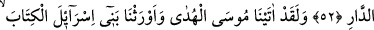

ALLAHIN VAADI GERÇEKTİR
51. Şüphesiz peygamberlerimize ve îman edenlere, hem dünya hayatında, hem
şahitlerin şahitlik edecekleri günde yardım ederiz.
52. O gün zalimlere, özür dilemeleri hiçbir fayda sağlamaz. Artık lânet de
onlarındır, kötü yurt da onlarındır!
53. Andolsun ki biz Mûsâ’ya hidayeti verdik ve İsrailoğullarına, Kitab’ı miras
bıraktık.
54. Akıl sahipleri için bir öğüt ve doğruluk rehberi olan (bir kitab)
55. (Resûlüm!) Şimdi sen sabret. Çünkü Allah’ın vaâdi gerçektir. Günahının
bağışlanmasını iste. Akşam-sabah Rabbini hamd ile tesbîh et.
“Şüphesiz biz…” Burada kullanılan biz “nûnu” ya azamet nûnudur ya da ilâhî sıfatlar
veya bunların mazharları esas alınarak çoğul sıygası kulanılmıştır. “Peygamberlerimize
ve” onların tâbileri olan “iman edenlere hem dünya hayatında” belgeler vererek ve
öldürme, esir etme, kökünü kazıma gibi cezâlarla kâfirlerden intikamlarını alıp zaferi
onlara nasip ederek “hem şâhidlerin şâhidlik edecekleri günde,” yâni hem dünyada
hem de âhirette “yardım ederiz.”
Kıyâmet gününün bu şekilde ifâde edilmesi, yardımın nasıl olacağını göstermek ve
evvelki-sonraki bütün insanların önünde şâhidlerin peygamberler lehinde “vazifelerini
yaptıkları” yönünde; kâfirler aleyhinde de “tekzib ettikleri” yönünde yapacakları
şâhidlikle gerçekleşeceğini göstermek içindir. Söz konusu şâhidler, melekler ve
“Böylece sizleri tüm insanlar hakkında şahitlikte bulunasınız diye orta ümmet
kıldık.” (el-Bakara 2/143) âyetinin gösterdiği üzere, Ümmet-i Muhammed’in
müminleridir.
Bazen imtihan maksadıyla başgösteren görünürdeki mağlubiyetler, Cenab-ı Hakk’ın
müminlere dâimâ yardım etmekte olmasını engellemez. Çünkü önemli olan sonuçtur,
genel mânâda ne olduğudur. Yine, bazen meydana gelen hezîmetler ârızî bir durumdan
kaynaklanabilir. Meselâ Uhud’daki hezîmet komutanın emrini dinlememekten neşet
etmişti. Yine müminlerin başına gelen dünyalık peşinde koşma, kendini beğenme ve